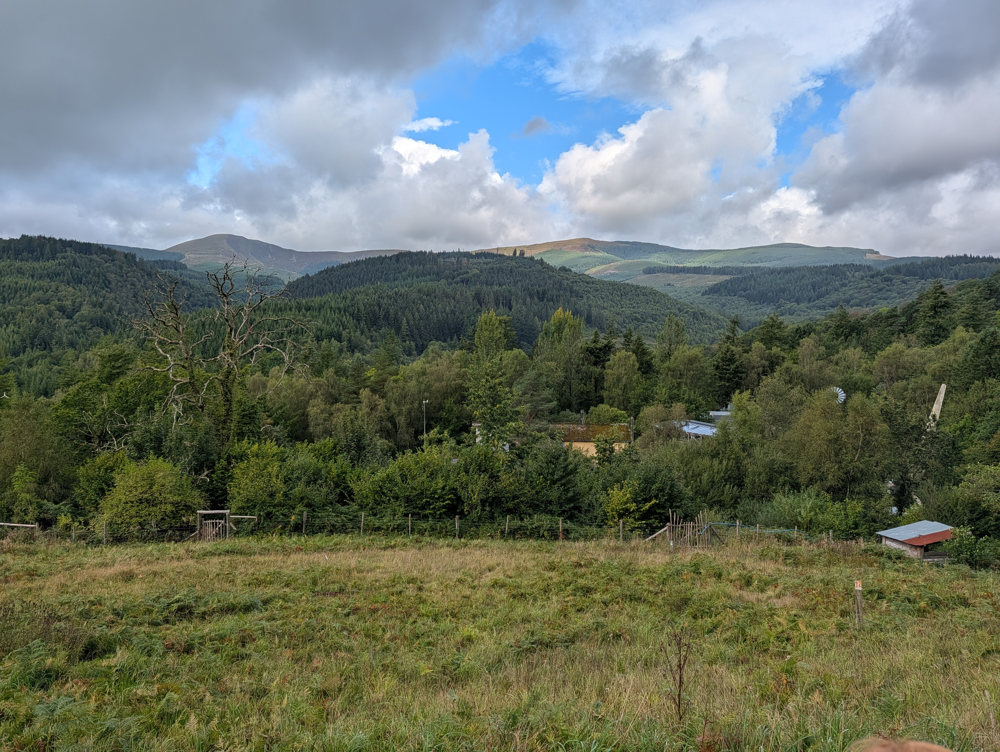

So, every journal, like every journey, needs to start somewhere...
Date: August 2026 • Location: London, UK • Trial stage: Preparing
So, every journal, like every journey, needs to start somewhere, and this one starts in London, on Tuesday the 18th of August, where Elle and I are staying with Elle’s mum Mary while we wait until September when we arrive at the Centre for Alternative Technology in Machynlleth (Wales). We will stay there for 4 days, where they will get to have a look at us and we get to have a look at them, and if we like the look of each other, then our adventure will truly begin.
When we returned from our 8 month tour of South America the first thing we did was apply to CAT for a 6 month volunteer role in their woodlands and waterways team. A week ago, we heard that our application(s) were successful and invited to the trial. This Journal is in hope more than anticipation that we will clear the final hurdle.
That possible future will unfold itself on these pages, but if you’ve read this far you might be interested in who we are, and what our plans are. To find out who we are, have a look at our bios. To understand our plan, then we need to go back in time a bit. About a year I think. Then, we had no real plan, no jobs, and were soon to be homeless, as we had to leave Geneva and return to London. Fortunately, despite these circumstances we were not penniless, and we had many options - our task was to choose between them. After discarding many we came up with one we could agree on. We decided to go to COP 30, in Belém (Brazil).
Sailing to COP 30
“Only a few seconds after deciding that we were going to Brazil, we realised how incredibly crass it would be to fly there, so we modified our decision and now it was clear – and exciting - that we were going to sail to Belém for COP 30.”
That decision, I see now, was the first in a series of events, adventures – and misadventures – that led us to where we are now. While trying to find a ship we fell in with a group of young activists organising Flotilla for Change, collecting an array of seacraft to coordinate their journey to Belem so that we all arrive together as a symbol of solidarity and sustainability. I was way out of my depth, but this kind of thing was Elle’s bread and butter. We found ourselves organising and hosting a series of interviews with indigenous representatives heading to COP to tell their stories of how climate change was disproportionately affecting them. Some of the most tragic stories I’d ever heard.
This was our first joint adventure into climate activism and we liked it. When we finally joined the Flotilla aboard the cargo schooner Avontuur as crew, we met others who had chosen activism over resigned despair.
Over the ensuing months we were to get up close and personal with nature in a way that our hikes in Switzerland had only hinted might be possible. The Atlantic Ocean itself, a thing of massive wonder, the natural beauty that abounds throughout Brazil, Patagonia, Chile, Bolivia and Peru. We lived and worked in jungles, climbed mountains and volcanoes got drenched by giant waterfalls, kayaked in enormous lakes, climbed palm trees and met many more people on the way who had chosen to work against climate change as opposed to contributing to it.
Our experience, the people we met, and two stints volunteering to help reforest the South American rainforests led us to the desire to do the same thing, but closer to home. I’d always wanted to return to Wales, and where better to help maintain (and possibly expand) a rainforest?
That’s page 1 of this journal. Elle and I are busy learning Cymraeg, more later. Diolch yn Fawr
Monday 31st August • Page 2
So, here we are at CAT. 4 hours on trains, which included 2 hours having a great chat with Aberystwythians Henry and Linda who were just returning from their holiday in Portugal. They gave us some great info about Mach and helped us with our Welsh pronunciation. Also invited us to visit if we’re in Aber – which we hope to be and will. Quick tour of Mach and then on the Bus to near CAT. 18 minutes uphill with a months’ worth of stuff on our backs and fronts got us to the front door.
To our surprise, the famous funicular wasn’t open, the office wasn’t open, in fact it was dilapidated, and signs pointed us up another hill to the visitor centre. It became clear to us that CAT has pivoted from being the visitor attraction that it was when we were last here in 2022 and focussed fully on becoming an educational institution. The themed parks and interactive displays are all either broken or closed off. The entire place looked a little post-apocalyptic. In direct contrast, the WISE centre is beautiful. Our accommodation and the lecture theatre and the building itself is artfully designed, using biomaterials and natural light it’s a splendid example of bioconstruction. We’re really looking forward to learning more about this CAT tomorrow, which is so different from the one we remembered.
We also met our fellow volunteer trialists, mostly young women with a smattering of men and oldies like us. Dave, the chef was very keen to hear our verdict on his vegan dinner, and we were all pleased to tell him it was delicious – bodes well for the next few days. We continued getting to know each other after dinner by wandering around the now abandoned (although still flourishing – the beds are being tended, and the plants and trees are all healthy) and rusting weed swept structures, each of which used to tell a story.
Elle discovered that a fellow redhead had also been to the same school as her (albeit far more recently 😊). We also put together the ping-pong table, allowing me to demonstrate once more a humiliatingly poor I am at the game.
One last thing, to save space I tied my new steel toe capped boots to the back of my rucksack, and when we arrived, we found that only one of the pair had survived the journey. Possibly stepping out in Edinburgh now. That is all. More to tell tomorrow, I’m sure.
Tuesday 1st September • Page 3

The view from CAT
>
So our morning starts with a lovely breakfast of vegan sausages, hash browns, beans and Welsh rarebit. Sadly, the rarebit had mustard in it and I had to put it into the food waste. Not sure whether that will ruin our chances. Still not clear about what happened to the visitor centre but some of the displays we saw today included endorsements from Chris Tarrant and Noel Edmonds(!) Moreover the prediction was Net Zero Britain by 2030, which seems a bit ambitious in 2026.
Anyway, Sven, the Belgian Forestry-lead with a Scandinavian name, took us on the quarry trail in the morning, patiently answering our questions, and graciously sharing his knowledge at every opportunity, often along with some scathing words for those who underestimated the nuance involved in conserving a forest, now and in the past. He shares our sense of urgency about things being done, and an impatience with the levels of discussion required before action is taken. We rejoined the larger group at teatime for coffee and biscuits in the ‘TeaChest’ which is a charming space for volunteers and staff to chill and connect. There we first met the outgoing volunteers and gently interrogated them about their experiences. After the break we went on a tour of the accommodation, which is not the same as where we are now (the student accommodation). We were taken to see several individual cells, simply furnished, across a balcony from the shared kitchen and lounge space. For the rooms themselves, all luxury was spared, but essentials were present, so we remain undaunted. We were subsequently taken to an as yet, unprepared collection of rooms in a modular house which was once part of the alternative technology display but has now been handed over to the volunteers’ team. Encouragingly that place has a double room, which (I feel) was intimated may be ours…should we be successful. Much nicer than the spartan rows of boxes that the current crop of volunteers have stoically endured.
With that Lunch and a photograph opportunity soup trolley in the staff room. Soup was delicious, change of venue mysterious and our chance to meet the broader staff slightly hindered by them all sloping off with their bowls and bread before we had a chance to start another round of gentle interrogations.
The absolute highlight of the day was returning to the woodshed where Sven had laid out some tools and PPE for us to lug up to the top of the highest mountain where, under his instruction we pruned a spruce and toppled a fir, as well as decimating the holly. First day. Better than our wildest dreams.
Lovely dinner of new potatoes vegan mince pie and red cabbage was enjoyed by all…but me. On learning there were onions in the pie I balked and not wanting to repeat the wastefulness of the morning I admitted to my hatred of (not allergy to) onions. The chef offered to whip up a cheese omelette instead and as it would be impolite to refuse such an offer I accepted. It was delicious, along with the 8 extra spuds I was given as compensation. But now I realise I’m going to start getting a reputation as an awkward bugger in the kitchen – how will that affect our chances to be invited back? Only time will tell. That’s all for tonight. Nos Da.
Wednesday 9th of September • Timeslip & Day 2 Retrospective
As the sharp-eyed of you will have noticed, there has been a time slip...
Wednesday the 3rd of September: Rain, Chains & Rhododendrons
It rained! It rained and rained and rained!! It did not stop raining!!!
Rhododendron Roots
Waterproofs on (we’d bought some new over trousers the week before, along with the workboots, believing that they were necessary, but everything was provided for trialists, so it turns out we might have lightened our backpacks instead of our wallets). Fully kitted out, we all marched up to the top of the quarry trail...
Thursday 10th of September • Outcome & Orchard Day
We’ve done it!
At 10:05 this morning I received an email congratulating me on being invited to CAT’s Natural Resources team for their winter residential volunteer programme. Elle got the same email (phew!). We both accepted.
Thursday the 4th of September: The Orchard & The Scythe
Clearing brambles and scything in the orchard
This was a very special day; the rain had relented and, instead of being assigned to our various prospective groups, the Gardeners, Maintenance and Resources (“Woodies”) teams came together to work in the orchard. We all combined to clear brambles, harvest apples and fix fences and gates. I was taught both how to prune an apple tree – very carefully, and how to scythe – with an actual scythe! You can get them…in different sizes. Patiently correcting my lame early attempts Sven allowed me to graduate to the large scythe and decimate brambles and grasses alike, creating an opportunity for new grass to grow and reducing the competition on the apple trees. It was also a great social occasion. We had tea at the orchard around a bonfire that Elle had been made responsible for.
That night we said goodbye to Sven and Chris, who were not going to be around on the last day, no wiser to our fate.
Thursday evening most of us went to the local Pub, Tafarn Dwynant, 40 mins walk away. We received a warm welcome there, with some of the locals saying that it was CAT that had brought them to the town. A pint of lager was £3.70 (!!!) That should shock any other Londoners reading this as much as it did me.
On the walk home we all got drenched when the rain returned, in force. Very grateful to Beth, an outgoing Woodie volunteer, for leading us back up the hill with the only torch anyone had thought to bring.
That’s all for today… We are going to CAT! Yaaaaaaay!